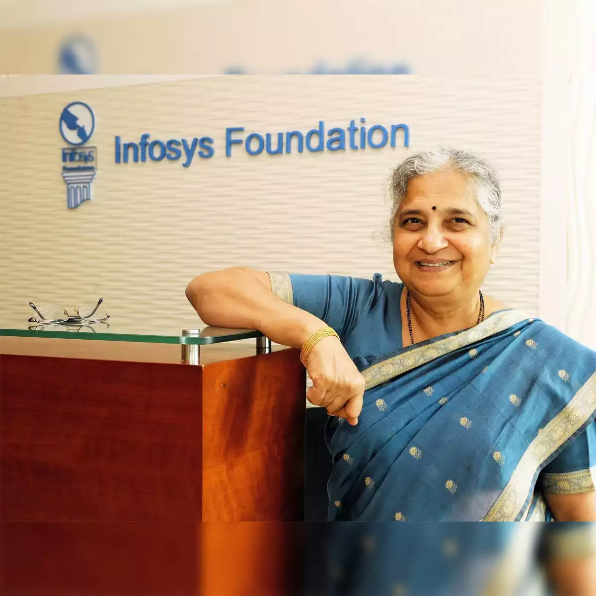
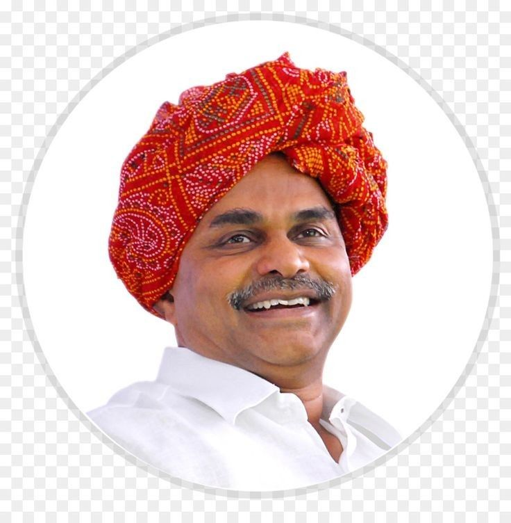
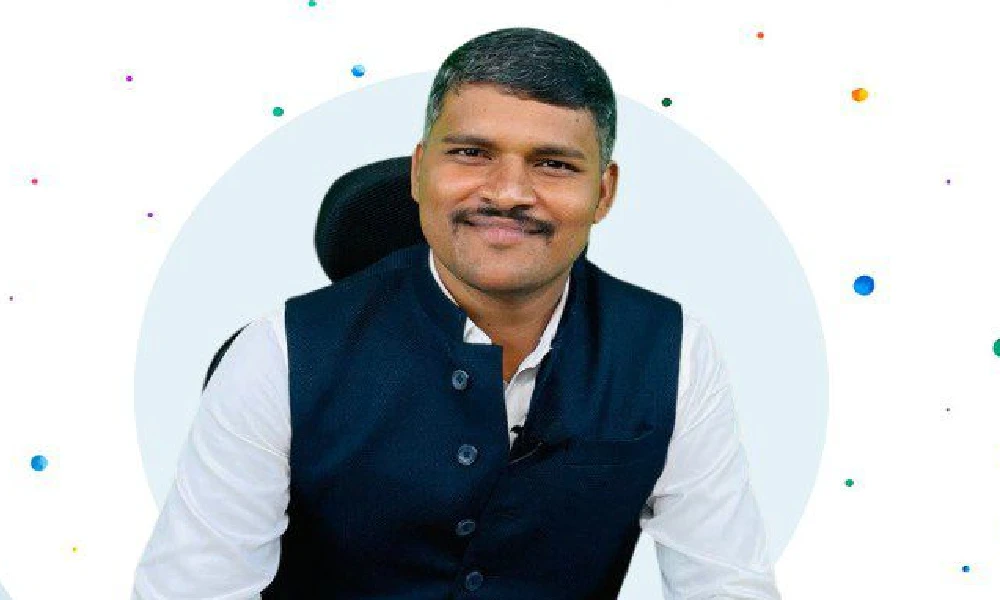

Library
Learn more about our college Library
About Us
Learn more about our college
Contact Us
Get in touch with us for any inquiries or support.
Sudha Murthy
Sudha Murthy, an illustrious alumna of Veerashaiva College, is renowned for her philanthropy and literary prowess. As the chairperson of Infosys Foundation, she has transformed countless lives through her charitable initiatives. Her impactful writing on social issues resonates deeply, earning her accolades including the prestigious Padma Shri award in 2006. Sudha Murthy continues to inspire with her unwavering commitment to making a positive difference in society.
Yeduguri Sandinti Rajasekhara Reddy
Yeduguri Sandinti Rajasekhara Reddy, commonly known as YSR, was a prominent Indian politician and Chief Minister of Andhra Pradesh. Known for his strong grassroots connect and welfare programs like Aarogyasri and free electricity to farmers, YSR's leadership left a lasting impact on the state. His tragic demise in a helicopter crash in 2009 marked the end of an era, leaving behind a legacy of inclusive governance and pro-poor policies that endeared him to millions.
Shantappa Kurubara
Karnataka's Shantappa Kurubara, a police sub-inspector, defied limitations. In his 8th attempt, he aced the UPSC CSE, securing AIR 644. This BSc graduate, who even failed 12th grade twice, proves that unwavering dedication trumps setbacks, inspiring aspirants across India.